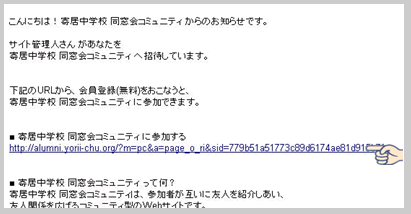
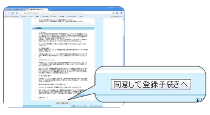
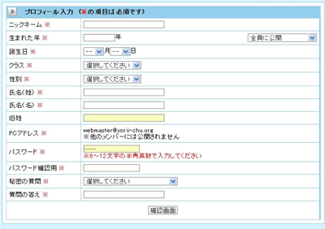
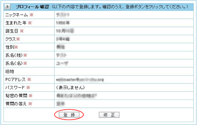
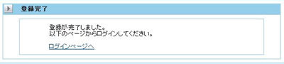

会員登録の方法（パソコン用）
パソコンより、ブラウザを起動し次のアドレスにアクセスします。
- 以下のリンクより、お名前およびメールアドレスを入力して、[送信]ボタンをクリックしてください。
- お名前を確認の後、会員登録用のメールをお送りします。下図のようなメールが届きますので、アドレスの部分をクリックして、ブラウザを開きます。（１〜２日程かかることがございます。あらかじめご了承ください）

- 「利用規約」が表示されますので、よろしければ「同意して登録手続きへ」をクリックします。

- 下図のような入力フォームが表示されますので、必要項目を記入して「確認画面」をクリックします。

- ニックネーム：ネット上では、本名ではなく「ニックネーム」でやり取りするのが慣例となっています。
このサイトでは、その性質上、本名も入力していただきますが、メッセージのやり取りなどはこの「ニックネーム」を使います。
- 生まれた年：生まれた年を西暦で入力してください。
- 誕生日：▼の部分をクリックすると選択可能な一覧が表示されますので、その中から、月・日を選んで入力してください。
- 氏名（姓）：名字を入力（結婚等で姓が変わった方は新姓を入力してください）
- 氏名（名）：名を入力してください。
- 旧姓：結婚等で姓が変更になった方は旧姓を入力してください。
- PCアドレス：登録時に入力したメールアドレスが表示されます。
（入力はできません。必要ならば登録後、変更することも可能です）
- パスワード：ログインの時に使用するパスワードを入力してください。
（入力したパスワードはログインに必要ですので、忘れないように）
- パスワード（確認）：上記と同じものを入力してください。
- 秘密の質問：パスワードを忘れたときに必要になります。選択肢の中から選んでください。
- 質問の答え：上記の質問の答えを入力してください。
- 「確認画面」をクリック。
- ニックネーム：ネット上では、本名ではなく「ニックネーム」でやり取りするのが慣例となっています。
- 前項で入力した内容の確認画面です。

間違いなければ、「登録」をクリック。
修正が必要な場合は、「修正」をクリックすれば、前の画面に戻れます。
- おつかれさま！

以上で「会員登録」は完了です。